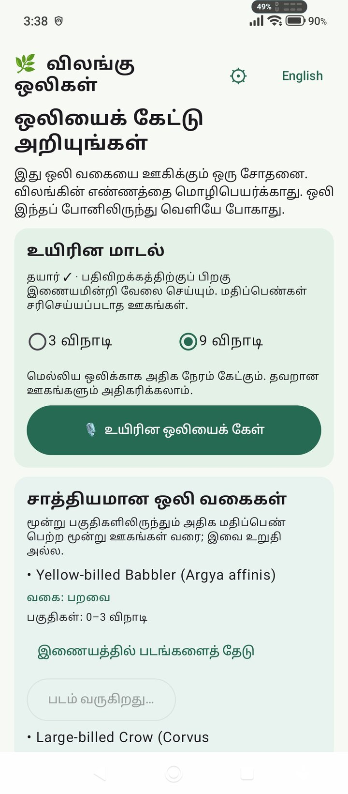
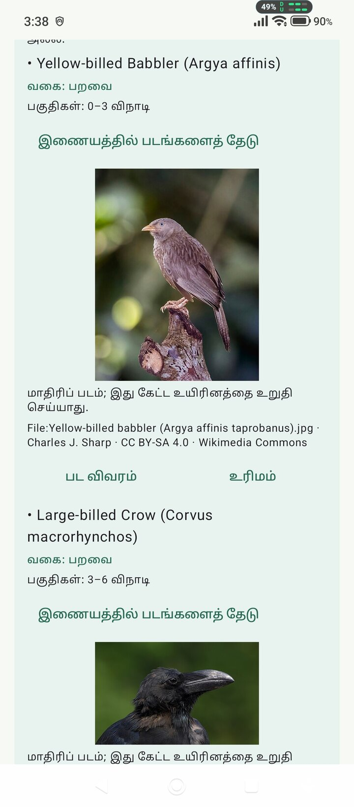
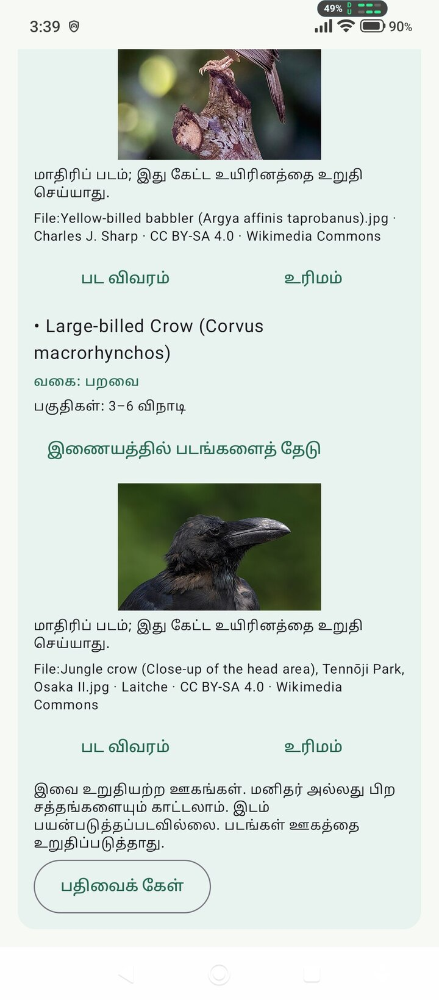
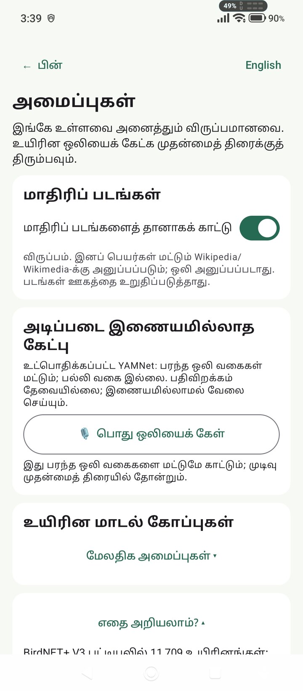
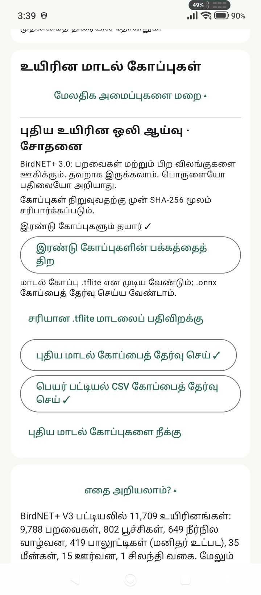
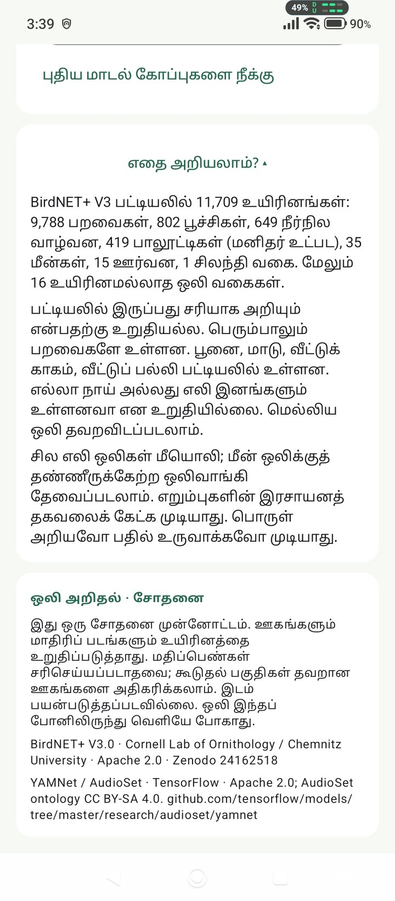
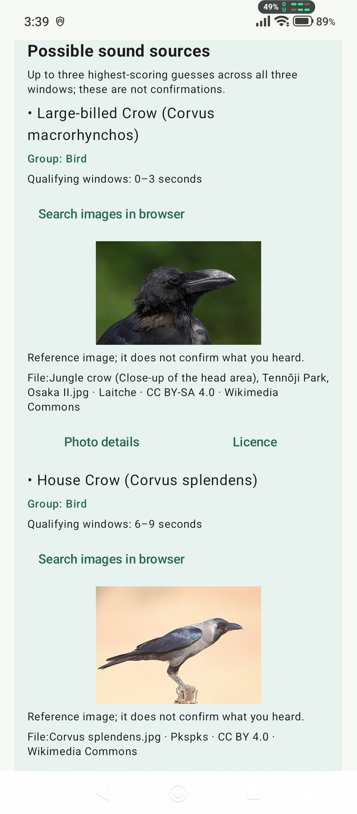
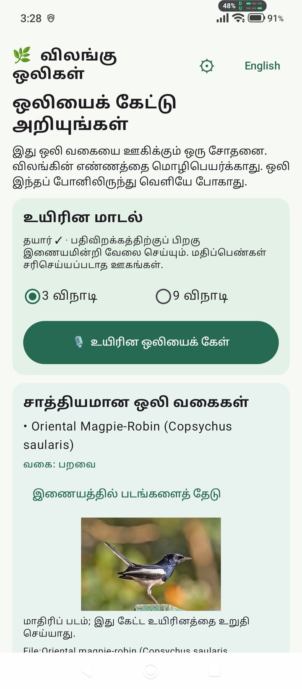
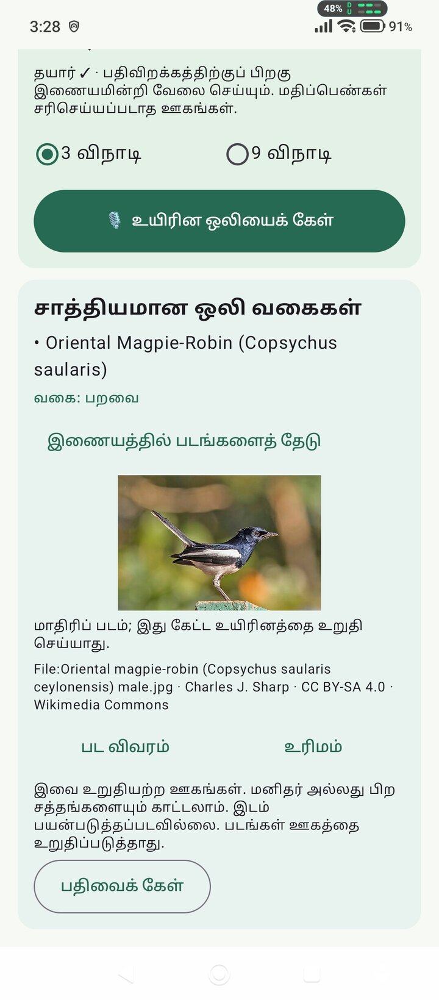

RP Ideas · Ramesh prathap .R · Version 0.22 · experimental prototype · Android 8.0+ · இலவசம் / Free, no ads, no tracking
முக்கியம்: இது ஒரு சோதனை முன்னோட்டம். செயலி காட்டும் ஒவ்வொரு இனமும் ஊகமே, உறுதிப்படுத்தல் அல்ல. மதிப்பெண்கள் சரிசெய்யப்படாதவை; இடம் பயன்படுத்தப்படவில்லை; விலங்கின் எண்ணத்தை மொழிபெயராது.
Important: This is an experimental prototype. Every species the app lists is a guess, never a confirmation. Scores are uncalibrated, no location filter is used, and it does not translate an animal's thoughts.
dcabd2d99a922b2634b76af5f4fa26db250a0122c527c68bb00716c985cdb708Same package (com.universalrp.animalvoice.experimental) and the same persistent signer as 0.17–0.20, so it installs over 0.20 in place. Do not uninstall or clear data; the downloaded model and settings stay. Download in your browser, then let Android ask you to confirm the install. Do not bypass an Android security warning.
அதே பெட்டி (com.universalrp.animalvoice.experimental), 0.17–0.20 உடன் அதே கையொப்ப விசை; 0.20 மீது நேரடியாக மேலெழுதி நிறுவலாம். Uninstall செய்யவோ data clear செய்யவோ வேண்டாம்; பதிவிறக்கிய மாடலும் அமைப்புகளும் இருக்கும். உலாவியில் பதிவிறக்கி, Android நிறுவலை உறுதிப்படுத்தக் கேட்கும்போது அனுமதிக்கவும். Android பாதுகாப்பு எச்சரிக்கையை மீற வேண்டாம்.
Testing status: the signed candidate was built by GitHub Actions; unit tests, lint and the Android 15 emulator suite (main screen, Settings, Guide and About at 2.0× font scale in both languages) passed. The exact 0.22 bytes were not installed on a phone before publication; the owner reported the 0.21 screens that this release fixes. Not an independent security audit.
விலங்கு ஒலிகள் நீங்கள் அழுத்தியபிறகு சில விநாடிகள் கேட்டு, இந்தப் போனிலேயே இயங்கும் மாடல்களால் சாத்தியமான ஒலி வகைகளைக் காட்டும். செயலி எதையும் உறுதிப்படுத்தாது. ஒரு தலைப்பைத் தொட்டு விரிவாக்குங்கள்.
குறுகிய பதிவில் எந்த விலங்கோ பிற ஒலி மூலமோ இருக்கலாம் என்று இது ஊகிக்கிறது; உயிரின மாடல் (BirdNET+ 3.0, சுமார் 79 MB, ஒருமுறை பதிவிறக்கம்) மற்றும் உட்பொதிக்கப்பட்ட அடிப்படை மாடல் (YAMNet) பயன்படுகின்றன. இது ஒரு சோதனை: மதிப்பெண்கள் சரிசெய்யப்படாத ஊகங்களே, நிகழ்தகவுகள் அல்ல; ஒரே ஒலி வேறு விலங்குகளிடமிருந்தும் வரலாம். விலங்கின் எண்ணத்தை மொழிபெயராது, பொருளை அறியாது, பதில் உருவாக்காது.
உயிரின மாடல் நிறுவப்படாதபோது முதன்மைத் திரையின் உயிரின மாடல் அட்டையில் உயிரின மாடலைப் பதிவிறக்கு பொத்தான் தெரியும். அழுத்தி, மொபைல் தரவு குறிப்பைப் படித்து உறுதிப்படுத்துங்கள். மாடலும் பெயர்ப் பட்டியலும் தனித்தனியே, உண்மையான பைட் முன்னேற்றத்துடன் பதிவிறக்கப்படும்; செயலியைத் திறந்தே வைக்கவும். பதிவிறக்கத்தை நிறுத்து என்பது இன்னும் கிடைக்காத கோப்பை மட்டும் ரத்து செய்யும்; சரிபார்க்கப்பட்ட கோப்புகள் நீக்கப்படாது. ஒவ்வொரு கோப்பும் நிறுவுவதற்கு முன் SHA-256 மூலம் சரிபார்க்கப்படும். அதன்பிறகு இணையமின்றி அறிதல் வேலை செய்யும்; அதே கையொப்ப விசையிலான புதுப்பிப்பு கோப்புகளைக் காப்பாற்றும்.
உயிரின ஒலியைக் கேள் பொத்தானை அழுத்துங்கள்; முதல் முறை Android ஒலிவாங்கி அனுமதியைக் கேட்கும். 3 விநாடி (இயல்பு) ஒரு பகுதியைக் கேட்கும். 9 விநாடி மூன்று பகுதிகளைக் கேட்டு, ஒவ்வொன்றும் எந்தெந்த விநாடிகளில் தகுதி பெற்றது என்பதுடன் மூன்று ஊகங்கள் வரை காட்டும்; மெல்லிய ஒலியைக் கண்டறியலாம், ஆனால் தவறான ஊகங்களும் கூடலாம். நிறுத்து பொத்தான் கேட்பதை நிறுத்தும். பதிவைக் கேள் உறுதிப்படுத்தியபிறகு உங்கள் சொந்தப் பதிவை மீண்டும் இயக்கும்; அது உருவாக்கப்பட்ட பதில் அல்ல.
சாத்தியமான ஒலி வகைகள் பகுதி மூன்று ஊகங்கள் வரை காட்டும்; அவை சரிபார்க்கப்படாதவை, மனிதர்களையோ பிற ஒலிகளையோ கூடக் காட்டலாம். தெளிவாகத் தெரியவில்லை என்றால் எதுவும் தகுதி பெறவில்லை; பெரும்பாலும் ஒலி மெல்லியதாகவோ தொலைவிலோ இருந்திருக்கும். வகை வரி (பறவை, பூச்சி, நீர்நில வாழ்வன், பாலூட்டி, மீன், ஊர்வன், சிலந்தி வகை அல்லது உயிரினமல்லாத வகை) காட்சிக்கு மட்டுமே; எதுவும் வடிகட்டப்படவோ மறுவரிசைப்படுத்தப்படவோ மாட்டாது. தமிழ்நாட்டில் Wood Frog போன்று இயல்பான எல்லைக்கு அப்பாற்பட்ட இனம் மறைக்கப்படாமல் எச்சரிக்கையுடன் காட்டப்படும். மனிதப் பேச்சும் ஒரு ஊகமாகவே காட்டப்படும்; பேச்சு மெல்லிய ஒலிகளை மறைக்கலாம் என்ற குறிப்புடன்.
இயல்பாக இயக்கப்பட்டுள்ளது: ஒவ்வொரு அடையாளத்திற்கும் பிறகு செயலி இனப் பெயர்களை மட்டும் Wikipedia/Wikimedia Commons-க்கு அனுப்பி, இலவச உரிமமுள்ள மாதிரிப் படத்தை அதன் நன்றியும் உரிம இணைப்பும் கொண்டு காட்டும்; படம் நீங்கள் கேட்டதை உறுதிப்படுத்தாது; எல்லா இனங்களுக்கும் படம் கிடைக்காது. இணையத்தில் படங்களைத் தேடு என்பது உலாவியில் பெயரை Google-க்கு அனுப்பும். மாதிரிப் படங்களைத் தானாகக் காட்டு மாற்றி ⚙ அமைப்புகளில் உள்ளது; அணைத்தால் ஏற்கனவே காட்டிய படங்கள் நீங்கும்.
⚙ அமைப்புகள் → அடிப்படை இணையமில்லாத கேட்பு → பொது ஒலியைக் கேள் என்பது உட்பொதிக்கப்பட்ட YAMNet மாடலை எந்தப் பதிவிறக்கமும் இல்லாமல் இயக்கும். இது பரந்த ஒலி வகைகளை மட்டுமே காட்டும், இனங்களை அல்ல; பல்லி வகை இல்லை. முடிவு முதன்மைத் திரையில் அடிப்படை மாடல் முடிவு என்று தனிப் பதிவைக் கேள் பொத்தானுடன் தோன்றும்.
⚙ அமைப்புகள் → உயிரின மாடல் கோப்புகள் (எல்லாக் கட்டுப்பாடுகளும் முழுமையாகக் காட்டப்படும்; எதுவும் மறைக்கப்படாது). Zenodo பக்கத்திலிருந்து BirdNET+ 3.0 .tflite மாடலையும் அதன் பெயர்ப் பட்டியல் CSV-ஐயும் நீங்களே தேர்ந்தெடுக்கவும் (.onnx கோப்பை அல்ல); ஒவ்வொரு கோப்பும் நிறுவப்பட்டதற்குப் பதிலாக வருவதற்கு முன் SHA-256 மூலம் சரிபார்க்கப்படும். புதிய மாடல் கோப்புகளை நீக்கு மாடலையும் பெயர்ப் பட்டியலையும் நீக்கும். பழைய பறவை மாடல் இனி பயன்படுத்தப்படாது; அதன் நீக்கு பொத்தான் சேமிப்பிடத்தை மட்டுமே மீட்கும்.
ஒலியின் பொருளை, விலங்கின் மனநிலையை அல்லது எந்தப் பதலையும் இது சொல்ல முடியாது. சரிபார்க்கப்பட்ட பல்லி வகுப்பாளர் இல்லை; எலி ஒலிகள் பெரும்பாலும் மீயொலி, அதற்கு சிறப்பு ஒலிவாங்கி தேவை; எறும்புகளின் இரசாயக் குறிகளைக் கேட்க முடியாது. மெல்லிய, தொலைவான, காற்றில் கலந்த அல்லது ஒன்றின்மேல் ஒன்றான ஒலிகள் தவறவிடப்படலாம் அல்லது குழப்பமாகலாம். இடத்தை அடிப்படையாக எதுவும் வடிகட்டப்படாததால் வேறு பகுதியின் இனமும் தோன்றலாம். பட்டியலில் உள்ள இனம் என்பது எப்போதும் உறுதியல்ல.
ஒலிவாங்கி நீங்கள் அழுத்தி Android அனுமதியளித்த பிறகு மட்டுமே, தேர்ந்தெடுத்த 3 அல்லது 9 விநாடிகளுக்கு மட்டுமே இயங்கும். மாதிரி நினைவகத்திலேயே இருக்கும், கேட்பது நின்றதும் அழிக்கப்படும், கோப்பாக எழுதப்படாது, பதிவேற்றப்படாது. இணையம் பயன்படுவது ஒருமுறை மாடல் பதிவிறக்கம், மாதிரிப் படங்கள் (இயல்பாக இயக்கம்; இனப் பெயர்கள் மட்டும்), நாளுக்கு ஒருமுறை பொது வெளியீட்டு விவரங்களின் வாசிப்பு மட்டும்; இணையதளமோ GitHub ஆகியவை உங்கள் IP முகவரி போன்ற வழக்கமான கோரிக்கைத் தகவலைப் பெறலாம். இடம், புள்ளிவிவரம், கணக்கு, விளம்பரம், பின்னணிக் கேட்பு எதுவும் இல்லை. பதிவில் அருகில் உள்ளவர்களின் குரலும் இருக்கலாம்; ஒப்புதல் பெறுங்கள், மீண்டும் கேட்க ஹெட்ஃபோன் பயன்படுத்துங்கள்.
முதன்மைத் திரையின் மேலேயும் அமைப்புகளிலும் உள்ள English / தமிழ் முழு இடைமுகத்தையும் மாற்றும்; தேர்வு நினைவில் இருக்கும். செயலி உங்கள் அமைப்பின் எழுத்தளவைப் பின்பற்றும்; இரு மொழிகளிலும் இரு மடங்கு அளவில் சோதிக்கப்பட்டது; உருட்டி எல்லாக் கட்டுப்பாடுகளையும் அடையலாம். தமிழ் எழுத்து ஆங்கிலத்துடன் ஒரே தெரிவளவில் இருக்க சற்றுச் சிறியதாக வரையப்படும்.
⚙ அமைப்புகளைத் திறக்கும்; ← பின் அல்லது அமைப்பு பொத்தான் முதன்மைத் திரைக்குத் திரும்பும். வழிகாட்டியும் இந்தச் செயலி பற்றியும் அமைப்புகளின் இறுதியில் உள்ளன; பற்றி பக்கம் எமது செயலிகளின் பெயர்களை (தமிழன் / Tamilan Store மற்றும் தினக்கணக்கு / DailyVault முதலில்), பதிவிறக்க இடமான அதிகாரப்பூர்வ இணையதளம், GitHub களஞ்சியம், நன்றிகளைக் காட்டும். இணையம் இருக்கும்போது நாளுக்கு ஒருமுறை பொது வெளியீட்டு விவரங்களை வாசிக்கும்; புதிய பதிப்பு இருந்தால் அதிகாரப்பூர்வ இணையதளத்தைத் திறக்கும் அறிவிப்பு காட்டும். உலாவியில் பதிவிறக்குங்கள்; பிறகு Android நிறுவலை உறுதிப்படுத்தக் கேட்கும். செயல் APK-ஐத் தானாக பதிவிறக்கவோ நிறுவவோ செய்யாது. Android பாதுகாப்பு எச்சரிக்கையை மீற வேண்டாம்.
நெருங்கிச் செல்லுங்கள், காற்றில்லாத இடத்தில் இருங்கள்; கையால் ஒலிவாங்கியைக் காற்றிலிருந்து மறைக்கவும். மெல்லிய ஒலிக்கு 9 விநாடி முயற்சிக்கவும்; பிறகு ஊகங்களை வகை வரி மற்றும் மாதிரிப் படத்துடன் ஒப்பிடவும். கூடுகள் அல்லது பாதுகாக்கப்பட்ட வனவிலங்குகள் அருகில் விலங்குகளை அழைக்க ஒலிகளை இயக்க வேண்டாம்; விலங்கு தொந்தரவுபடுத்தப்பட்டால் நிறுத்துங்கள்.
Animal Sounds listens for a few seconds after you tap, then lists possible sound sources using models that run on this phone. Nothing is confirmed by the app. Tap a topic to open it.
It guesses which animal or other sound source a short recording may contain, with a species model (BirdNET+ 3.0, about 79 MB, downloaded once) and a bundled basic model (YAMNet). It is experimental: scores are uncalibrated guesses, not probabilities, and the same sound can come from different animals. It does not translate an animal's thoughts, determine meaning or generate replies.
The Species model card on the main screen shows Download species model when the model is not installed. Tap it, read the mobile-data note and confirm. Model and label files download separately with real byte progress; keep the app open. Stop download cancels only the file still missing; files already verified stay installed. Each file is checked by SHA-256 before installation. Afterwards identification works offline, and a same-key app update keeps the files.
Tap Identify animal sound; Android asks for microphone permission the first time. 3 seconds (default) listens to one window. 9 seconds listens to three windows and shows up to three guesses with the seconds each one qualified in; it may catch a quiet call but can also add false guesses. Stop ends listening. Replay my sample plays your own recording after a confirmation; it is not a generated reply.
Possible sound sources lists up to three guesses; they are unverified and can include people or other sounds. Unknown means nothing qualified, often because the sound was quiet or distant. The Group line (Bird, Insect, Amphibian, Mammal, Fish, Reptile, Arachnid, or a non-animal class) is display only; nothing is filtered or reordered. A species far from its known range, such as Wood Frog in Tamil Nadu, shows a caveat instead of being hidden. Human speech is shown as a real guess with a note that talking may mask quieter calls.
On by default: after each identification the app sends only the species names to Wikipedia/Wikimedia Commons and shows a free-licence reference photo with its credit and licence links; the photo does not confirm what you heard, and not every species has one. Show reference photo does the same on demand, and Search images in browser sends the name to Google in your browser. The Load reference photos automatically switch is in ⚙ Settings; turning it off clears photos already shown.
⚙ Settings → Basic offline listening → Listen with basic model runs the bundled YAMNet model without any download. It returns broad sound categories only, not species, and has no lizard class. The result appears on the main screen as Basic model result with its own replay button.
⚙ Settings → Species model files (every control is shown in full; nothing hides behind a dropdown). Import the BirdNET+ 3.0 .tflite model and its labels CSV yourself from the Zenodo page (never the .onnx file); each file is SHA-256 verified before it replaces the installed one. Remove v3 files deletes the model and labels. The old bird-only model is no longer used; its remove button only reclaims storage.
It cannot tell what a sound means, an animal's mood or any reply. There is no validated lizard or gecko classifier; rat calls are often ultrasonic and need a special microphone; ants use chemical signals that cannot be heard. Quiet, distant, wind-blown or overlapping sounds are missed or confused. No location filter is applied, so a species from another region can appear. A listed species is never a guarantee.
The microphone runs only after your tap and Android's permission, for the chosen 3 or 9 seconds. The sample stays in memory, is cleared when listening stops and is never written to a file or uploaded. Internet is used only for the one-time model download, reference photos (on by default; species names only) and a once-a-day read-only check of public release metadata; the website or GitHub sees ordinary request data such as your IP address. No location, analytics, accounts, ads or background listening. A recording can include nearby people's voices: get consent and use headphones for replay.
English / தமிழ் at the top of the main screen and of Settings switches the whole interface; the choice is remembered. The app follows your system font size and was checked at twice the default size in both languages; every control stays reachable by scrolling. Tamil text is drawn slightly smaller than English so both languages read at the same visual size.
⚙ opens Settings; ← Back or the system Back button returns to the main screen. Guide and About are at the end of Settings; About lists our apps by name (Tamilan Store and DailyVault first) with the official website as the download place, the GitHub repository and credits. When online, the app reads public release metadata at most once a day; if a newer version exists it shows a notice whose button opens the official website. Download in your browser; Android then asks you to confirm the install. The app never downloads or installs an APK itself. Do not bypass an Android security warning.
Get closer and out of wind; shield the microphone with your hand. Try 9 seconds for a faint call, then compare the guesses with the group line and a reference photo. Do not play sounds to attract animals near nests or protected wildlife, and stop if an animal is disturbed.
Owner-supplied screens from version 0.20 (Tamil and English), resized with metadata removed; the status bar shows only time and battery. Version 0.22 changes the Tamil text size, the Settings layout, the About links and the photo default, so these pictures predate those changes.
உரிமையாளர் அளித்த 0.20 திரைகள் (தமிழ் மற்றும் ஆங்கிலம்); அளவு மாற்றப்பட்டு மெட்டாடேட்டா நீக்கப்பட்டது; நிலைப் பட்டியில் நேரமும் பேட்டரியும் மட்டுமே. 0.22-இல் தமிழ் எழுத்தளவும் அமைப்புகள் அமைப்பும் இணைப்புகளும் புகைப்பட இயல்புநிலையும் மாற்றப்பட்டன — இந்தப் படங்கள் அந்த மாற்றங்களுக்கு முந்தையவை.









Created by: Ramesh prathap .R (universalrp2003@gmail.com) · RP Ideas. Software assistance: Arena.ai Agent Mode. Free apps, no ads, no tracking, no accounts; updates need your confirmation. Source code and contributor credits are on GitHub.
உருவாக்கம்: Ramesh prathap .R (universalrp2003@gmail.com) · RP Ideas. மென்பொருள் உதவி: Arena.ai Agent Mode. இலவச செயலிகள்; விளம்பரம் இல்லை, கண்காணிப்பு இல்லை, கணக்கு இல்லை; புதுப்பிப்புக்கு உங்கள் ஒப்புதல் தேவை. மூல நிரலும் பங்களிப்பாளர் நன்றிகளும் GitHub-ல் உள்ளன.
All eighteen RP Ideas Android apps — seventeen regular apps plus the optional Tamilan Store. Each link opens that app's card on the official website.
எமது பதினெட்டு RP Ideas Android செயலிகள் — பதினேழு வழக்கமான செயலிகள், விருப்பமான தமிழன் கடையுடன். ஒவ்வொரு இணைப்பும் அதிகாரப்பூர்வ இணையதளத்தில் அந்தச் செயலியின் அட்டையைத் திறக்கும்.